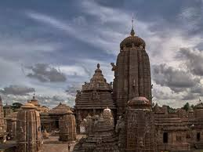
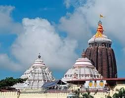
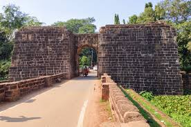
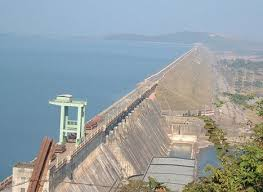

Lingaraj Temple
Ancient Hindu temple dedicated to Lord Shiva.

Ancient Hindu temple dedicated to Lord Shiva.
UNESCO World Heritage Site, famous for its intricate architecture depicting the chariot of the Sun God.
Jain rock-cut caves dating back to the 2nd century BCE.
Exhibits on history, archaeology, and art of Odisha.
Zoo and botanical garden known for white tigers and wildlife conservation.

Famous Hindu temple dedicated to Lord Jagannath, Balabhadra, and Subhadra.
Popular beach destination and site for the annual Rath Yatra (Chariot Festival).
Scenic beach near the Konark Sun Temple.
Asia's largest brackish water lagoon, famous for bird watching and Irrawaddy dolphins.

Historic fort and sports complex.
Museum showcasing the life of Netaji Subhas Chandra Bose.

Longest man-made dam in India, offering scenic views and boat rides.
Hindu temple dedicated to Goddess Samaleswari.
Park with a giant statue of Lord Hanuman.
Scenic spot on the confluence of rivers Brahmani, Sankha, and Koel.
Seaside resort and beach destination.
Temple dedicated to the Goddess Tara Tarini, atop a hill offering scenic views.
Unique beach where the sea recedes up to 5 kilometers during low tide.
Tiger reserve and biodiversity hotspot.
Mangrove forest and sanctuary for saltwater crocodiles and migratory birds.
Annual chariot festival of Lord Jagannath, attracting millions of devotees.
Classical dance performances against the backdrop of the Konark Sun Temple.
Opportunities in national parks and wildlife sanctuaries.
Boating and water activities at Chilika Lake and Hirakud Dam.